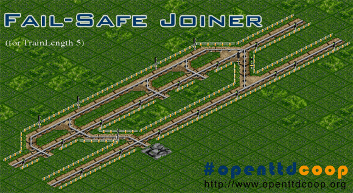
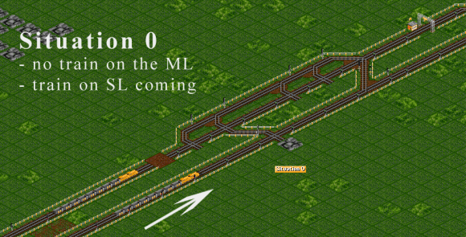
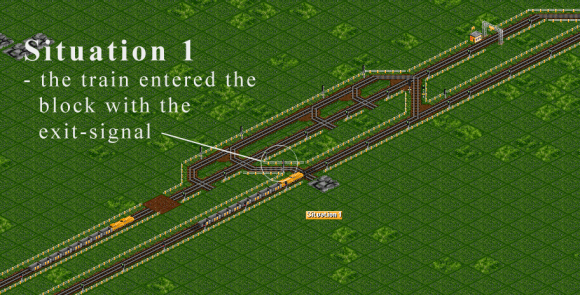
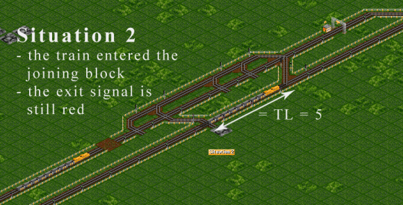
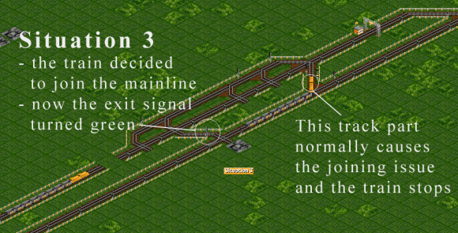
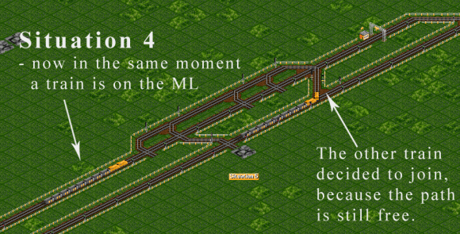
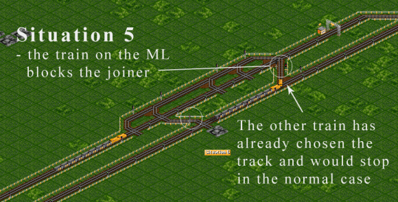
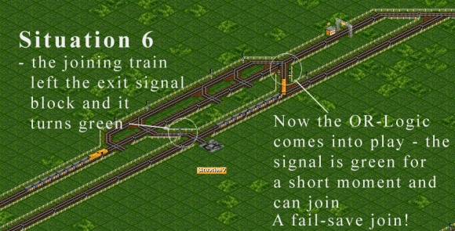
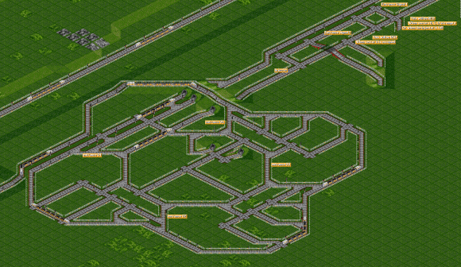

Fail-Safe Joiners, Priorities and the Cyclotron example
Some days ago I stumbled upon openttd wikis page about Railyway Designs and I saw the Cyclotron created by Pitt2. Those high speed injectors are not too new and we experimented with them a lot. Though we don’t use them in most cases, because they are difficult to build, depending on the properties of trains and such. Its just too much work for too less effect and pre-accelerated joiners are the better choice. Though I had a look at the construction and checked how it worked. A little footnote about a fixed bug made me curious, but then I understood that it fixes the issue which occurs if a train wants to join another track but in the same moment the signal turns red and the train stops blocking a complete line. Therefor we have the overtaking lanes in most SML constructions. We all like cool words for cool constructions, here they are. Fail-safe Joiners:

How it works
The functionality is as simple as genius. The joining train has influence on the priority line by adding OR logic. The exit-signal of the joining trains track turns green again after a train made a decision. If in the meantime a train on the mainline blocked the entrance it stays green, because the OR logic determines it (the joining train unblocks itself, because the exit-signal turns green). If a train is already on the mainline, both signals are red at the point the joining train has to make the decision and won’t join.
Well, if you didn’t understand anything its either my english or you should read it again. Though pictures say more then 1k words. Here we go:
Situation 0
This is a very basic situation, a train is on outer line and wants to go the the waypoint. No trains are coming on the mainline. 

Situation 1
The train entered the block with the exit signal and it turns red. 

Situation 2
The length of the track from the exit signal block to the joining block is exactly as long as one train (TL). If you have trains of different sizes on one track you either use the TL sorter first or you have a neat idea. 🙂 

Situation 3
The train choses, the correct track. This isn’t too interesting because there isn’t a train on the ML. Though you might have notice that the exit signal turned green again right before the train passes the entrance signal. 

Situation 4
Now we have the same situation as before, but a train is coming on the ML. The train on the sideline already decided to join the ML. 

Situation 5
The train on the ML now activated the priority line and the entrance signal turned red. This is a bad situation, because the train on the SL wants to join now. and the other train is far away, joining isn’t a problem. 

Situation 6
Luckily in the same moment the exit signal turns green again and therefor also the entrance signal, the train on the SL can join. 

I really love this behaviour and you can replace joiners with “overtaking space” with this system. You can probably reduce the size of SML layouts we see nowadays and the good old 1<2 join or even more might become attractive again.
Quadruple Full-Featured Cyclotron
And what I wanted to show you, I modified Pitt2’s Cyclotron, it comes now with 4 entrance possibilities which increases the chance of a join drastically. And for high-speed trains the additional way shouldn’t be a problem. 

Categories: Community News, Development, Gameplay, Tutorial
Ammler January 13, 2010 10:57
nice article and nice idea, hope to see that in busy network soon 🙂
Mark January 13, 2010 12:02
Very nice concept. The greatest advantage I can see is in SML shifters. Because trains don’t stop at all anymore on the ML, this will improve ML capacity. The benefit is especially big for fast, slowly accelerating trains, such as the lev4. If my understanding is correct a 4 lane SML shifter using fail-save shifts for TL5 would look like this:
http://wiki.openttdcoop.org/images/8/84/Fail-safe_4-lane_SML_shift.png
Also note the footprint size reduction.
Sidelines joining SML network can also be made quite a bit more efficient. In the join below a train will first try to join the ML at full speed, if this fails it will move on to the longer prio and sit there until it has enough space to get to full speed on the ML.
http://wiki.openttdcoop.org/images/6/63/Fail-safe-SML-join-with-2nd-chance.png
V453000 January 13, 2010 13:01
Very nice 🙂 gotta try that right now
Roysvork January 13, 2010 13:10
I don’t mean to rain on your parade… but it should really be Fail-safe join : )
Osai January 13, 2010 17:33
@Roysvork: Ouch… thank you for the hint. It was very late in the night yesterday… “save” doesn’t make sense 😀 I replace all, thx!
Alexander Pas January 13, 2010 17:43
I believe, if we can combine this, together with http://wiki.openttdcoop.org/File:Same_side_prio.png we can have some great stuff.
Patrick January 13, 2010 19:18
It’s funny actually, I spent a long time on that design, trying to get 2 trains in them at once and so on, and then gave up and used linear injectors instead.
Then I realised that other bugs (features) with train speed and 45-degree track turns made my goal of ludicrous train density impossible anyway, and abandoned the whole thing.
ProZone Game 13: Timed (aka insane) SML at #openttdcoop August 2, 2010 23:45
[…] it for a bit… It all started back at the time of psg 172 when Osai presented an article about those super clever Fail-safe joiner. That thing is most useful for SML so we used it there. Here I actually realized what happens with […]
PhuocLe May 10, 2014 14:28
Can somebody make and example save game for me.
I try do this but not success
Thanks
grossws January 29, 2019 11:57
It seems this joiner has quite annoying failure mode in which secondary line is blocked unless there’s huge gap in primary line (more than prio size).
If train from secondary line just reached entry pre-signal and cleared failsafe block next train after it can enter that block and close failsafe exit pre-signal thus negating one of OR branches. In that case primary line has absolute prio and can block secondary indefinitely.
https://wiki.openttdcoop.org/File:Grossws-failsafe-join-failure-tl3.png (signal set is from BRIX and rails are from PURR).